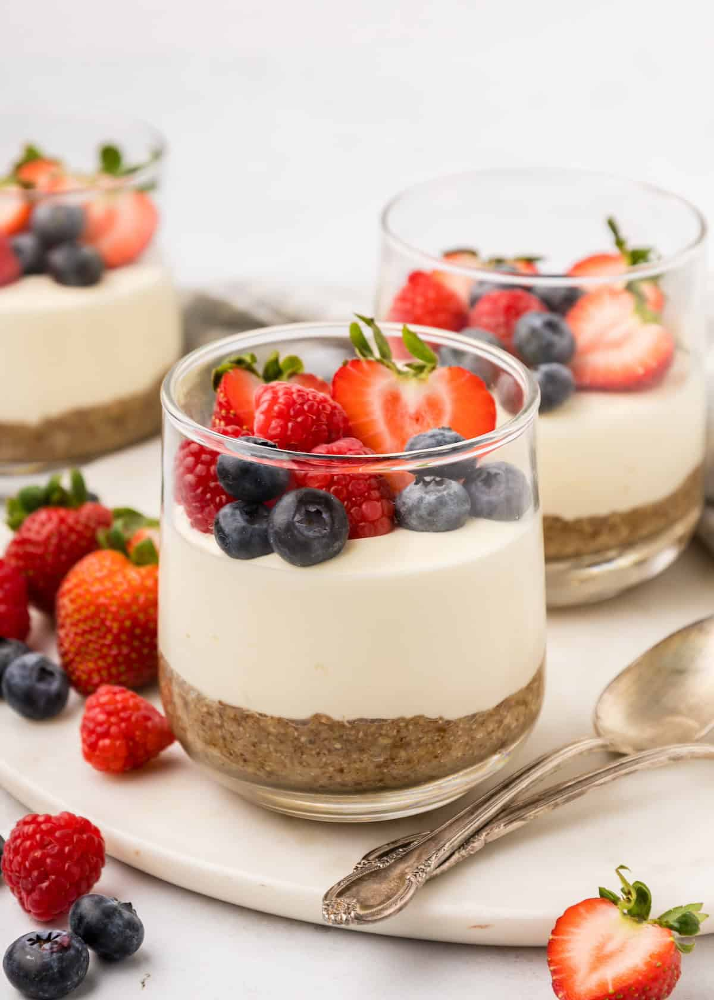

No Bake Cheese Cake Cups

**No-Bake Cheesecake Cups** are creamy, individual-sized desserts that are easy
to make and perfect for any occasion. With a buttery graham cracker crust and a light,
fluffy cream cheese filling, they require no oven time—just mix, chill, and enjoy!
Top with fresh fruit, chocolate, or jam for a sweet finishing touch.
Ingredients
- 1 cup crushed graham crackers
- 2 tbsp melted butter
- 1 cup cream cheese (softened)
- 1/2 cup powdered sugar
- 1 tsp vanilla extract
- 1 cup whipped cream or whipped topping
Steps
- Mix graham cracker crumbs with butter and press
into the bottom of small cups.
- Beat cream cheese, sugar, and vanilla until smooth.
- Fold in whipped cream.
- Spoon mixture over crust. Chill for 2+ hours.
- Top with fruit or chocolate sauce.
Home